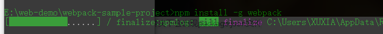

webpack打包工具的学习
- 下载nodejs安装，在项目文件夹webpack-sample-project下打开命令行，注意，项目文件夹名不应该有空格、中文，不然打包过程会出错
- Webpack可以使用npm安装，新建一个空的练习文件夹（此处命名为webpack sample project），在终端中转到该文件夹后执行下述指令就可以完成安装。
//全局安装npm install -g webpack//安装到你的项目目录npm install --save-dev webpack

- 在上述练习文件夹中创建一个package.json文件，这是一个标准的npm说明文件，里面蕴含了丰富的信息，包括当前项目的依赖模块，自定义的脚本任务等等。在终端中使用npm init命令可以自动创建这个package.json文件
npm init

一直回车即可，此时在文件夹下会出现package.json文件
- 目录文件结构如下

<!-- index.html --><!DOCTYPE html><html lang="en"><head><title>Webpack Sample Project</title><meta charset="utf-8"></head><body><div id="root"></div><script type="text/javascript" src="../dist/main.js"></script></body></html>//Greeter.jsmodule.exports=function(){var greet=document.createElement('div');greet.textContent="Hi there and greetings!";return greet;}//main.jsconst greeter = require('./Greeter.js');document.querySelector("#root").appendChild(greeter());
- 正式使用Webpack，会自动生成dist文件夹，dist/main.js文件


可以看出webpack同时编译了main.js 和Greeter,js,现在打开index.html,可以看到如下结果

已经成功的使用Webpack打包了一个文件了。不过在终端中进行复杂的操作，其实是不太方便且容易出错的，接下来看看Webpack的另一种更常见的使用方法。
- Webpack拥有很多其它的比较高级的功能（比如说本文后面会介绍的loaders和plugins），这些功能其实都可以通过命令行模式实现，但是正如前面提到的，这样不太方便且容易出错的，更好的办法是定义一个配置文件，这个配置文件其实也是一个简单的JavaScript模块，我们可以把所有的与打包相关的信息放在里面
- 在当前练习文件夹的根目录下新建一个名为webpack.config.js的文件，我们在其中写入如下所示的简单配置代码，目前的配置主要涉及到的内容是入口文件路径和打包后文件的存放路径
module.exports = {entry: __dirname + "/app/main.js",//已多次提及的唯一入口文件output: {path: __dirname + "/public",//打包后的文件存放的地方filename: "bundle.js"//打包后输出文件的文件名}}
注：“__dirname”是node.js中的一个全局变量，它指向当前执行脚本所在的目录。

- 有了这个配置之后，再打包文件，只需在终端里运行webpack(非全局安装需使用node_modules/.bin/webpack)命令就可以了，这条命令会自动引用webpack.config.js文件中的配置选项，示例如下：


更快捷的执行打包任务
- 在命令行中输入命令需要代码类似于node_modules/.bin/webpack这样的路径其实是比较烦人的，不过值得庆幸的是npm可以引导任务执行，对npm进行配置后可以在命令行中使用简单的npm start命令来替代上面略微繁琐的命令。在package.json中对scripts对象进行相关设置即可，设置方法如下。

- 我们在命令行中输入npm start试试，输出结果如下：

出错了，执行这个步骤

再次
npm start

现在只需要使用npm start就可以打包文件了，有没有觉得webpack也不过如此嘛，不过不要太小瞧webpack，要充分发挥其强大的功能我们需要修改配置文件的其它选项，一项项来看。
- 当在main.js中引入css文件时，执行webpack命令时会报错，因为webpack本身是不支持引入css文件的。


如何处理呢？执行如下命令

完成后执行webpack，还是报错，因为还需要为css指定loader

这次没有错了

此时打包的css并没有生效，要使css生效，还需使用style-loader

也可以不在文件中声明所需的loader，在命令行声明，如下

- 设置文件自动打包

查看打包的模块

查看打包进度:--progress
查看打包原因：--display-reasons
- 使用webpack构建本地服务器
让你的浏览器监听你的代码的修改，并自动刷新显示修改后的结果，其实Webpack提供一个可选的本地开发服务器，这个本地服务器基于node.js构建，可以实现你想要的这些功能，不过它是一个单独的组件，在webpack中进行配置之前需要单独安装它作为项目依赖npm install --save-dev webpack-dev-serverdevserver作为webpack配置选项中的一项，以下是它的一些配置选项，更多配置可参考这里
Loaders
Loaders是webpack提供的最激动人心的功能之一了。通过使用不同的loader，webpack有能力调用外部的脚本或工具，实现对不同格式的文件的处理，比如说分析转换scss为css，或者把下一代的JS文件（ES6，ES7)转换为现代浏览器兼容的JS文件，对React的开发而言，合适的Loaders可以把React的中用到的JSX文件转换为JS文件。
Loaders需要单独安装并且需要在webpack.config.js中的modules关键字下进行配置，Loaders的配置包括以下几方面：
- test：一个用以匹配loaders所处理文件的拓展名的正则表达式（必须）
- loader：loader的名称（必须）
- include/exclude:手动添加必须处理的文件（文件夹）或屏蔽不需要处理的文件（文件夹）（可选）；
- query：为loaders提供额外的设置选项（可选）
- 我们把Greeter.js里的问候消息放在一个单独的JSON文件里,并通过合适的配置使Greeter.js可以读取该JSON文件的值，各文件修改后的代码如下：


Babel
Babel其实是一个编译JavaScript的平台，它可以编译代码帮你达到以下目的：
- 让你能使用最新的JavaScript代码（ES6，ES7...），而不用管新标准是否被当前使用的浏览器完全支持；
- 让你能使用基于JavaScript进行了拓展的语言，比如React的JSX；
- Babel的安装与配置
Babel其实是几个模块化的包，其核心功能位于称为babel-core的npm包中，webpack可以把其不同的包整合在一起使用，对于每一个你需要的功能或拓展，你都需要安装单独的包（用得最多的是解析Es6的babel-env-preset包和解析JSX的babel-preset-react包）。我们先来一次性安装这些依赖包// npm一次性安装多个依赖模块，模块之间用空格隔开npm install --save-dev babel-core babel-loader babel-preset-env babel-preset-react在webpack中配置Babel的方法如下:module.exports={entry: __dirname +"/app/main.js",//已多次提及的唯一入口文件output:{path: __dirname + "/public",//打包后的文件存放的地方filename: "bundle.js" //打包后输出文件的文件名},devtool:'eval-source-map',devServer:{contentBase:"./public",//本地服务器所加载的页面所在目录historyApiFallback:true,//不跳转inline: true//实时刷新},module:{rules:[{test:/(\.jsx|\.js)$/,use:{loader:"babel-loader",options:{presets:["env","react"]}},exclude:/node_modules/}]}}现在你的webpack的配置已经允许你使用ES6以及JSX的语法了。继续用上面的例子进行测试，不过这次我们会使用React，记得先安装 React 和 React-DOMnpm install --save react react-dom接下来我们使用ES6的语法，更新Greeter.js并返回一个React组件//Greeter.jsimport React, {Component} from 'react'import config from './config.json';class Greeter extends Component{render(){return (<div>{config.greetText}</div> );}}export default Greeter修改main.js如下，使用ES6的模块定义和渲染Greeter模块//main.jsimport React from 'react';import {render} from 'react-dom';import Greeter from './Greeter';render(<Greeter />,document.getElementById('root') )重新使用npm start打包，如果之前打开的本地服务器没有关闭，你应该可以在localhost:8080下看到与之前一样的内容，这说明react和es6被正常打包了。

CSS
- webpack提供两个工具处理样式表，css-loader 和 style-loader，二者处理的任务不同，css-loader使你能够使用类似@import 和 url(...)的方法实现 require()的功能,style-loader将所有的计算后的样式加入页面中，二者组合在一起使你能够把样式表嵌入webpack打包后的JS文件中。
- 安装css-loader，style-loader
//安装npm install --save-dev style-loader css-loader
- 配置

- 使用
接下来，在app文件夹里创建一个名字为"main.css"的文件，对一些元素设置样式我们这里例子中用到的webpack只有单一的入口，其它的模块需要通过 import, require, url等与入口文件建立其关联，为了让webpack能找到”main.css“文件，我们把它导入”main.js “中，如下通常情况下，css会和js打包到同一个文件中，并不会打包为一个单独的css文件，不过通过合适的配置webpack也可以把css打包为单独的文件的。上面的代码说明webpack是怎么把css当做模块看待的，咱们继续看一个更加真实的css模块实践。CSS module


- 被称为CSS modules的技术意在把JS的模块化思想带入CSS中来，通过CSS模块，所有的类名，动画名默认都只作用于当前模块。Webpack对CSS模块化提供了非常好的支持，只需要在CSS loader中进行简单配置即可，然后就可以直接把CSS的类名传递到组件的代码中，这样做有效避免了全局污染。具体的代码如下
我们在app文件夹下创建一个Greeter.css文件来进行一下测试导入.root到Greeter.js中CSS预处理器


- Sass 和 Less 之类的预处理器是对原生CSS的拓展，它们允许你使用类似于variables, nesting, mixins, inheritance等不存在于CSS中的特性来写CSS，CSS预处理器可以这些特殊类型的语句转化为浏览器可识别的CSS语句，
以下是常用的CSS 处理loaders:
- Less Loader
- Sass Loader
- Stylus Loader
不过其实也存在一个CSS的处理平台-PostCSS，它可以帮助你的CSS实现更多的功能，在其官方文档可了解更多相关知识。举例来说如何使用postcss，我们使用postcss来为CSS代码自动添加适应不同浏览器的CSS前缀。首先安装postcss-loader 和 autoprefixer（自动添加前缀的插件）npm install --save-dev postcss-loader autoprefixer接下来，在webpack配置文件中添加postcss-loader，在根目录新建postcss.config.js,并添加如下代码之后，重新使用npm start打包时，你写的css会自动根据Can i use里的数据添加不同前缀了。这样就会自动添加浏览器前缀了至此，本文已经谈论了处理JS的Babel和处理CSS的PostCSS的基本用法，它们其实也是两个单独的平台，配合webpack可以很好的发挥它们的作用。接下来介绍Webpack中另一个非常重要的功能-Plugins


插件（Plugins）
插件（Plugins）是用来拓展Webpack功能的，它们会在整个构建过程中生效，执行相关的任务。Loaders和Plugins常常被弄混，但是他们其实是完全不同的东西，可以这么来说，loaders是在打包构建过程中用来处理源文件的（JSX，Scss，Less..），一次处理一个，插件并不直接操作单个文件，它直接对整个构建过程其作用。Webpack有很多内置插件，同时也有很多第三方插件，可以让我们完成更加丰富的功能。使用插件的方法
- 要使用某个插件，我们需要通过npm安装它，然后要做的就是在webpack配置中的plugins关键字部分添加该插件的一个实例（plugins是一个数组）继续上面的例子，我们添加了一个给打包后代码添加版权声明的插件。
const webpack = require('webpack');......plugins:[new webpack.BannerPlugin("版权所有，翻版必究")]通过这个插件，打包后的JS文件显示如下(测试没有成功)HtmlWebpackPlugin

- 这个插件的作用是依据一个简单的index.html模板，生成一个自动引用你打包后的JS文件的新index.html。这在每次生成的js文件名称不同时非常有用（比如添加了hash值）。
安装npm install --save-dev html-webpack-plugin这个插件自动完成了我们之前手动做的一些事情，在正式使用之前需要对一直以来的项目结构做一些更改：
- 移除public文件夹，利用此插件，index.html文件会自动生成，此外CSS已经通过前面的操作打包到JS中了。
- 在app目录下，创建一个index.tmpl.html文件模板，这个模板包含title等必须元素，在编译过程中，插件会依据此模板生成最终的html页面，会自动添加所依赖的 css, js，favicon等文件，index.tmpl.html中的模板源代码如下：
<!DOCTYPE html><html lang="en"><head><meta charset="utf-8"><title>Webpack Sample Project</title></head><body><div id='root'></div></body></html>
3.更新webpack的配置文件，方法同上,新建一个build文件夹用来存放最终的输出文件
const webpack = require('webpack');const HtmlWebpackPlugin = require('html-webpack-plugin');module.exports = {entry: __dirname + "/app/main.js",//已多次提及的唯一入口文件output: {path: __dirname + "/build",filename: "bundle.js"},devtool: 'eval-source-map',devServer: {contentBase: "./public",//本地服务器所加载的页面所在的目录historyApiFallback: true,//不跳转inline: true//实时刷新},module: {rules: [{test: /(\.jsx|\.js)$/,use: {loader: "babel-loader"},exclude: /node_modules/},{test: /\.css$/,use: [{loader: "style-loader"}, {loader: "css-loader",options: {modules: true}}, {loader: "postcss-loader"}]}]},plugins: [new webpack.BannerPlugin('版权所有，翻版必究'),new HtmlWebpackPlugin({template: __dirname + "/app/index.tmpl.html"//new 一个这个插件的实例，并传入相关的参数})],};
再次执行npm start你会发现，build文件夹下面生成了bundle.js和index.html。

Hot Module Replacement